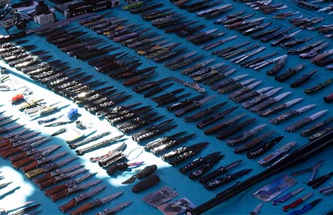
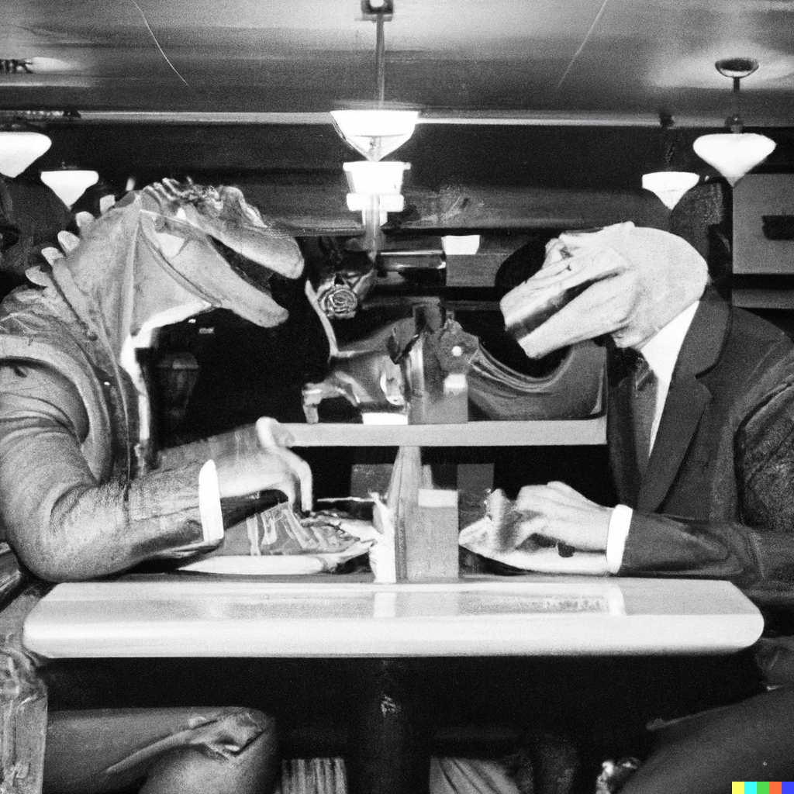

Bitácora
Cuchillos en la feria de la Caro
Nov/22
Cuando murió mi mascota de la infancia, llegué a mi casa después de que la hubieran enterrado. Por eso lo digo, creo que ella nunca ha estado muerta de verdad. Intenté llorar, pero sin acceso a la evidencia definitiva, todo parecía (y parece) mentira.
Tal vez robar un arma y dejar atrás una carta diciendo que me voy de viaje para siempre. Que no me volverán a ver jamás. Mejor; escribir puras pendejadas, creyéndose la raja, ganarse el odio para que nadie te eche de menos después. “Qué bueno que se vaya y que no vuelva más, siempre supe que era un hijo de puta”.
Oct/22
Consideré saltar desde lo alto, pero me parece una crueldad inmerecida hacia quienes me han amado, que no son pocos. Muchas veces el suicida no muere de inmediato al estrellarse abajo, aunque se presume que ya está inconsciente, se los ha visto retorciéndose, destrozados, con partes de su cuerpo completamente arrancadas, fracturas expuestas y gritando desgarradoramente.
Pienso en la orilla del océano, sobre las rocas, intoxicación con cianuro. El cuerpo, que desaparezca en el mar (esto es más sueño que posibilidad), así la muerte siempre queda envuelta de misterio; sin un cadáver, la muerte es siempre algo abstracto, que no se termina de concretar en la conciencia de los que quedan.
Sept/22
Es una decisión no tomada, esa es la ventaja. Quiero decir, que la decisión se puede postergar hasta la muerte, por definición, no hay apuro. Desconfío del suicida que elije una fecha particular, ante la muerte el paso del tiempo pierde sentido. Me interesa mucho más el proceso de toma de aquella decisión, especialmente en lo que respecta al método, que me parece lo más conflictivo.
Si pienso en los motivos que empujan al suicida, al menos en mi caso, surge una ironía macabra que hace pensar que la farsa que aqueja a la conciencia puede no ser una farsa en absoluto. Los métodos menos destructivos, dolorosos, traumáticos, son los menos accesibles, los menos discretos. Aparte del miedo al dolor (que en sí mismo es miedo a la muerte, lo que habla de un suicida poco convencido) está la preocupación de no dejar un cadáver tétrico; no dejar una habitación cubierta de sangre, un cuerpo desmembrado o desfigurado, la imagen de pesadilla de un ahorcado con la cabeza azul e inflada. Incluso los métodos menos violentos dejan la huella de una violencia terrorífica. Compadezco a la persona que deba encontrarme tendido en la cama con la cabeza metida en una bolsa plástica, por mucho que ésta esté conectada a un tanque de helio. De todos modos, es la forma de suicidio que elegiría si pudiera; no sientes la asfixia, es como un sedante permanente. Probablemente, sin embargo, deba optar por la intoxicación, que conlleva más agonía; vómitos, dolores, desorientación, arrepentimiento, seguro. Y en cuanto a la escena del crimen, al lecho de muerte; toda esa cochinada. Cianuro, es sencillo de conseguir y barato. La morfina es atractiva pero muy cara.
Proyectos
TRADUCCION INCOMPLETA
ANATOLE BROYARD,
CENA DE DOMINGO EN BROOKLYN
1
Me di la vuelta larga hacia el metro, y como estaba yendo a Brooklyn el Village parecía tener todo el encanto de un Utrillo. Era solamente en momentos como este, en contraste con otra cosa, que este vecindario se volvía atractivo. Feo en sí mismo, era un alivio de ciertos tipos de belleza. Para la mayoría de los que, como yo, vivían allí, tenía tanto encanto como podría tenerlo una aldea escuálida para una princesa encerrada en una torre de marfil.
Como era verano, todos los italianos estaban en la calle en pisos y sillas o parados en la vereda y vestidos de domingo, los viejos de azul marino y los jóvenes de azulino, como si cada generación estuviera más diluida que la anterior. Las madres con el pelo atado hacia atrás y las manos encima de la falda como madonnas neandertales y vestidas, por supuesto, de negro, porque hubiera sido un milagro que alguien en sus familias no hubiera muerto durante el año. Las chicas vestían faldas lápiz largas que las hacían mover los pies a una velocidad increíble. Todos sus movimientos parecían engranados a un mismo tempo y miraban alerta defendiendo, de sus hermanos y madres por igual, su única valía.
En la esquina okuparon una casona enorme, gorda y pesada como las mujeres que oraban al interior, allí instalaron su iglesia. Al pasar, vi a través de las puertas abiertas los pilares de madera, encorvados como la espalda de un obrero bajo el peso de una jornada dura. Hasta el sonido de sus campanas, bajo los azotes del cura, era amargo y lo maldije como todos los domingos.
En la calle Thompson, a una cuadra y media de donde yo vivía, había un establo. De la ventana del segundo piso asomaba la cabeza de un caballo. Más arriba, en el canto de la ventana del piso más alto, crecía un geranio al interior de un tarro oxidado. Cerca de la esquina, un borracho dormía al sol mientras otro le agarraba la mano y le decía “buenos días, socio, buenos días”.
El estanque seco en el centro de la plaza Washington, el núcleo del Village, rebalsaba de guitarristas, cantantes y bailarines de folk, tamborileros, comunistas, anarquistas, voyeurs, frotteurs, fletos, perros, niños, negros, turistas, sicóticos, profesores de antropología, traficantes de heroína, de marihuana, lesbianas, lectores del New York Times, gente con radios portátiles, chicas nasales buscando chicos interesantes, los chicos no-interesantes que terminarían por seducir a las chicas nasales, chicas mayores entre una relación y la siguiente, chicos mayores buscando chicas menores, y todo eso. Allí donde estaban todos, la Quinta Avenida, se desvanecía después de penetrar el Washington Arch.
Mirando alrededor, no vi a ninguno de mis amigos, así que no había nada más que hacer que irme directo al metro. En la entrada en la esquina de Weverly Place y la Sexta Avenida, respiré profundo como un apneista y entré reacio al subterráneo.
El rugido del metro en la oscuridad, el paso por debajo del río con los oídos tapados por la presión-estos eran una obertura tan clásica del camino de vuelta a casa que me tenían hastiado. Así, yendo en sentido contrario, sentía que había dejado Brooklyn por Manhattan sólo para descubrir, al llegar, que había olvidado algo necesario. Ahora, deshaciendo mis pasos, sentí que el viaje era una tortura eterna, como siempre en estas circunstancias, a pesar de que en el sentido contrario la distancia se me pasaba desapercibida.
Por supuesto, lo que había olvidado eran mi madre y mi padre y lo volvería a hacer la próxima vez, pero a esas alturas ya lo había asumido como la naturaleza de las cosas. Difícilmente podrían ellos olvidarme a mí, porque tenían mi retrato encima de la chimenea junto al reloj. Tenía diez años, la fotografía, pero nunca me pidieron una nueva y yo estaba convencido de que esa era la forma en la que aún me veían. Como un criminal, podía cambiar mi apariencia, pero no podía engañarlos. Cada vez que llegaba a verlos, veía cómo sus ojos húmedos deshacían mi disfraz.
Mantenía un libro abierto sobre mis piernas-siempre llevaba un libro conmigo a Brooklyn, como un amuleto, una definición de mi ego delicado- pero para lo poco que leía, podría haberlo llevado en el bolsillo trasero del pantalón. Mi mente soltaba la página una y otra vez como una bolita en una máquina de pinball hasta que finalmente me rendía, aceptando que ningún libro podía competir con mi ficción favorita, mi madre y mi padre.
El tren se detuvo y un hombre que estaba sentado frente a mí salió. Había estado en el asiento junto a la ventana, perpendicular a la pared. Ahora, una mujer sentada paralela a la pared, había tomado el lugar que el hombre había desocupado. A su vez, un hombre sentado en el asiento correspondiente al que la mujer ocupaba ahora, pero de mi lado del tren, saltó a ocupar el asiento que ella había dejado y el tipo que estaba sentado junto a mí se desplazó a la nueva plaza vacía. Todo esto ocurrió en un solo movimiento colectivo. Cuando levanté la vista para ver a la mujer disfrutando su nuevo asiento, la sorprendí mirándome. Era una señora amargada de mediana edad y sus ojos, muy pequeños, me miraban con melancolía, llenos de un desagrado personal, como si estuviera imaginándome como su propio hijo. Algo en mí le producía un desagrado del infierno- mi ropa, mi corte de pelo o la expresión de mi cara, que no eran suficientemente ejecutivesco para darle seguridad en su vejez.
No tuve ganas de corresponder a su mirada, así que la evadí mirando, por mi parte, a un hombre que estaba parado un poco más allá. El tipo estaba masticando chicle exageradamente, y los movimientos de su mandíbula dura eran tan elaborados y regulares que me hicieron pensar en una imprenta enorme. Noté que estaba estudiándose en el reflejo de la ventana. Deteniendo su mandíbula en una posición en la que todas sus complicaciones estructurales resultaban especialmente conspicuas, se observaba con la atención científica y obsesiva de un Leonardo. Entonces, la máquina detuvo su movimiento hipnótico. Ahora, acomodando el chicle de un lado a otro, lograba una variedad de efectos. Cualquiera que lo viera pensaría que estaba rumiando un problema. Comenzó masticando lánguida, indiferente, desarmadamente con los dientes delanteros, la boca relajada al punto de tenerla medio abierta, hasta que de pronto, sin previo aviso, movió el chicle a la izquierda y comenzó a trabajarlo sistemáticamente entre sus muelas. Muy ejecutivesco, le dio una pulverizada maquinal y luego, justo antes de arrancarle el último resquicio de vida, volvió a posicionarlo al centro, donde sus dientes apenas alcanzaban a mellarlo y su lengua le daba vueltas en un masaje revivificante.
Mientras el tren llegaba a otra estación, sin interrumpir su rumiación, metió la mano a través del sello de goma con actitud napoleónica y cuando la puerta se abrió, él movió la mano tras de ella.
Yo nunca podría masticar chicle así, pensaba, y de pronto vi el nombre de mi propia estación a través de la puerta abierta, me puse de pié en un salto y corrí por ella justo antes de que se cerrara, confirmando absolutamente la impresión torpe que la vieja amargada se había hecho de mí.
En la cima de las escaleras el sol me dio en los ojos. Me parecía que el sol siempre brillaba en Brooklyn, secando ropa, curando raquíticos, evaporando charcos, invitando niños a jugar fuera y alentando flores de aspecto artificial en los antejardines. Contra mi voluntad, me entibiaba una melancolía inefable. Sentí que era una gran fuerza democrática de calefacción centralizada para esta gran casa en la que todos vivían juntos.
Las calles estaban casi desiertas, porque todos cenaban al mismo tiempo en Brooklyn. Conocía estas calles tan bien que podría recorrerlas con los ojos cerrados. No había un árbol contra el que no hubiera arrojado mi navaja, una pared contra la que no hubiera botado mi pelota, una grieta que no hubiera sorteado supersticiosamente. Ahora veía todo eso en cámara lenta; todo me parecía un simbolismo denso, como si yo fuera el lente de cámara en un documental esnobista. Cuando era niño, estas calles tenían rapidez y vida para mí, cada detalle me desafiaba a algo, a igualarlas en ingenio, fuerza, velocidad. Entonces, siempre estaba corriendo. Veía las cosas a la carrera y comentaba sobre ellas al pasar sin perder el ritmo sorteando vallas, esquivando, dando saltitos, pero siempre empujando adelante… hasta que, un día, me estrellé de frente contra mí mismo y cerré mi propio camino.
La escena se hacía todavía más sentenciosa por el hecho de ser domingo. Había un tremendo vacío dejado por Dios. En contraste con la intimidad-de-cocina de la iglesia de la calle Thompson- que, en su fealdad, lograba esconder la imagen de su parvada ante el universo- los cascarones punzantes de estos bloques tenían una mirada fría y punitiva y parecían vacíos excepto por las breves horas durante la mañana, cuando la gente salía con rostros neutralizados a venerar a una deidad ausente y muerta.
Desde la esquina podía ver a mi madre en el antejardín. Tenía la cara entornada en dirección a mí, aunque sabía que no podía verme a esa distancia. Tenía la sensación de que, donde quiera que estuviera, su cara siempre estaba entornada hacia mí. Ahora me veía, me saludaba con la mano y hablaba. En un momento se pondría a gritar. Yo también estaba sonriendo y gesticulando. Modifiqué mi andar, volviéndolo juguetón. “¡Hola, Paul!”, gritaba. “¿Cómo estás?” Yo seguía demasiado lejos para hablar. Quería correr, siempre quería correr los últimos metros. Odiaba los últimos pasos, el abismo final entre nosotros. Una vez que estuviéramos cerca, como amantes abrazados, no podríamos vernos con tanta claridad.
La agarré de los hombros y me agaché para besarla. Como siempre, cada uno ofreció una mejilla. Rápidamente, giramos las cabezas, evitando de algún modo milagroso que nuestros labios se tocaran, nuestras cabezas justo lo suficientemente lejos para darnos un beso con la boca torcida en medio de las mejillas, tres veces para estar seguros. Mi padre estaba dentro. Le hubiera gustado salir también, pero sentía que se haría un espectáculo. Por lo demás, él prefería que mi madre me saludara a solas, como si volviera a darme a luz.
Salió a mi encuentro en la puerta, nos atascamos ahí gesticulando y abrazados. Siempre gesticulábamos demás, desconfiando del lenguaje y el pensamiento. Y todo el tiempo estábamos gritando, como cantantes de ópera. “¡Sácate el abrigo!”, decían. “¡Sácate la corbata!”. A veces, casi esperaba que me pidieran mis cordones y el cinturón pero supongo que, después de todo, sabían que no había manera de deshacerse de la daga de la mente.
“Espera, ¡te sirvo un martini!”, gritó mi padre corriendo a la cocina. “¡Siéntate!”. “¡Acomódate!”. Mi madre me arrojó sobre el sillón de mi padre, presionó el botón del brazo y de pronto me encontré en posición horizontal. Sintonizó la estación WQXR en la radio, que vertió una de las sinfonías más familiares como descargando carbón de una tolva.
Este sillón había sido un regalo para mi padre en uno de sus cumpleaños. Mi madre estaba fascinada con el botón. A mí nunca me gustó. Siempre me pareció perturbadoramente misterioso. Sentí que el sillón me tamizaba, mientras yo luchaba por mantener la cabeza arriba.
Recortes
Jackson señaló que "esta es una acusación que presentaron parlamentarios del Partido Republicano, tengo entendido, sin antes conversar con el resto de la oposición, y por lo tanto, no comprometía los distintos apoyos por parte de la oposición. Tengo entendido que varios se han convencido de que a partir de los argumentos de lado y lado, no hay argumentos para la acusación constitucional".
Sobre los juicios y críticas hacia su personalidad, el ministro remarcó que "es algo que no está dentro de las causales establecidas por la Constitución o las leyes de esta herramie
Complotadores contra la humanidad